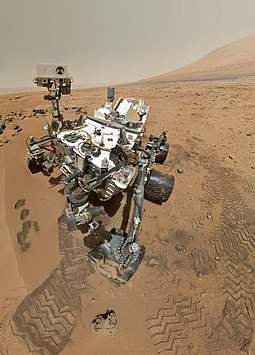

L'exploration de Mars tient une place particulièrement importante dans les programme scientifiques d'exploration du Système solaire des principales puissances spatiales, plus de quarante sondes, orbiteurs atterrisseurs ont été envoyés vers la planette depuis le début des années 1960.

Durant les années 70, Mars a été l'un des enjeux de la course à l'espace entres les États-Unis et l'Union soviétique à l'époque de la Guerre froide. Après un sommeil de près de 20 ans, les années 1990 voient la reprise des missions d'exploration de la planète. Depuis un quart de siècle, les orbiteurs et les atterrisseurs se succèdent.
La compétition américano-soviétique vers Mars fut jalonnée de nombreux échecs comme en atteste le tableau suivant :
| Période | Nations | Missions | |
|---|---|---|---|
| Succès | Échecs | ||
| 1960-1969 | URSS | 0 | 8 |
| USA | 3 | 1 | |
| 1971-1975 | URSS | 5 (dont 4 partiels) | 4 |
| USA | 5 | 1 | |
| 1988 | URSS | 1 (partiel) | 3 |
Depuis la fin des années 90, des rovers autonomes parcourent la surface martienne :
Exploration du système martien [en ligne]. Wikipedia, l'encyclopédie libre, 2021, [consulté le 10 Mai 2021], disponible sur https://fr.wikipedia.org/wiki/Exploration_du_système_martien.